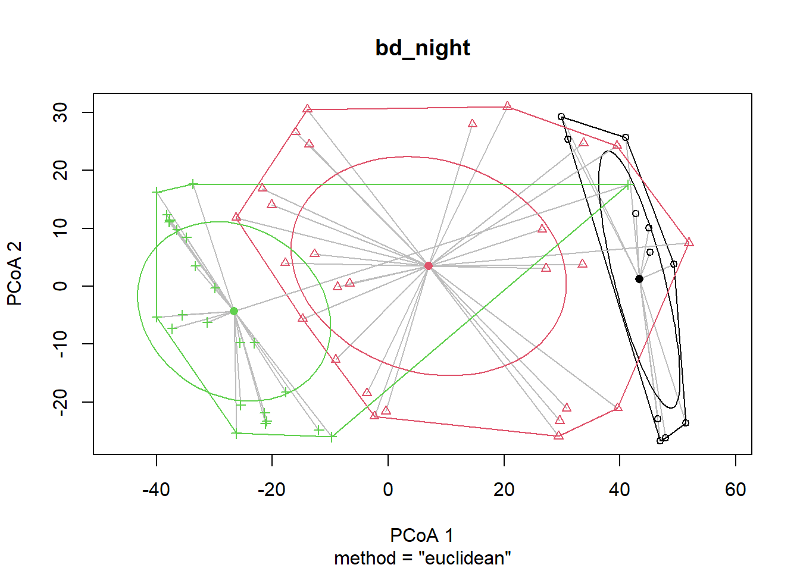
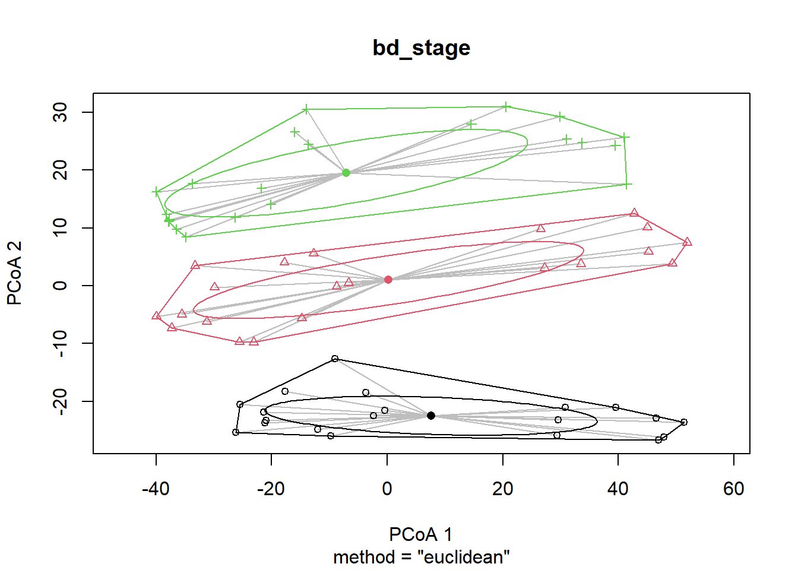

# Define file paths
feature_table_path <- "../salipante/241121_StonyCoral/270x200/250414_StonyCoral_270x200_featureTable_filtered.qza"
metadata_path <- "../metadata/meta.csv"
taxonomy_path <- "../salipante/241121_StonyCoral/270x200/250414_270x200_representative-sequences_taxonomy.qza"Compositional Data Analysis
Following Gloor et al. 2017 recommendations for microbiome compositional data analysis
1 Background
This analysis follows the recommendations from Gloor et al. 2017 for compositional data analysis of microbiome data. Microbiome sequence count data are compositional - they represent relative abundances constrained to sum to a total (sequencing depth). This requires specialized statistical methods that account for the compositional nature of the data.
Key recommendations from Gloor et al. 2017: - Use centered log-ratio (CLR) transformation to convert compositional data to Euclidean space - Calculate Aitchison distance (Euclidean distance on CLR-transformed data) for dissimilarity - Use variance-based methods like PCA on CLR-transformed data - Perform statistical tests on transformed data
2 Setup
2.1 Install & load packages
# Check R version
# R.version.string
# Install and load required packages
#if (!requireNamespace("BiocManager", quietly = TRUE)) {
# install.packages("BiocManager")
#}
# Install Bioconductor packages
#if (!requireNamespace("phyloseq", quietly = TRUE)) {
# BiocManager::install("phyloseq")
#}
#if (!requireNamespace("ANCOMBC", quietly = TRUE)) {
# BiocManager::install("ANCOMBC")
#}
# Install CRAN packages
#required_packages <- c("tidyverse", "vegan", "compositions", "zCompositions",
# "ggplot2", "reshape2", "corrplot", "devtools")
#for (pkg in required_packages) {
# if (!requireNamespace(pkg, quietly = TRUE)) {
# install.packages(pkg)
# }
#}
# Install qiime2R from GitHub
#if (!requireNamespace("qiime2R", quietly = TRUE)) {
# devtools::install_github("jbisanz/qiime2R")
#}
# Install SpiecEasi for SparCC (optional, can be slow to install)
#if (!requireNamespace("SpiecEasi", quietly = TRUE)) {
# devtools::install_github("zdk123/SpiecEasi")
#}# Load libraries
library(tidyverse)
library(qiime2R)
library(phyloseq)
library(vegan)
library(compositions)
library(zCompositions)
library(ggplot2)
library(reshape2)
library(corrplot)
library(ANCOMBC)3 Load Data
3.1 Load metadata
# Load metadata
meta <- read_csv(metadata_path)
# set factors
meta <- meta %>%
mutate(
collection_date = as.Date(collection_date, format = "%d-%b-%Y"),
stage = factor(stage, levels = c("cleavage", "prawnchip", "earlygastrula"), ordered = TRUE),
leachate = factor(leachate, levels = c("control", "low", "mid", "high"), ordered = TRUE),
spawn_night = factor(
collection_date,
levels = as.Date(c("06-Jul-2024", "07-Jul-2024", "08-Jul-2024"), format = "%d-%b-%Y"),
labels = c("July 6th", "July 7th", "July 8th"),
ordered = TRUE
)
)
# View metadata structure
str(meta)tibble [63 × 9] (S3: tbl_df/tbl/data.frame)
$ sample_id : chr [1:63] "101112C14" "101112C4" "101112C9" "101112H14" ...
$ collection_date: Date[1:63], format: "2024-07-08" "2024-07-08" ...
$ parents : num [1:63] 101112 101112 101112 101112 101112 ...
$ group : chr [1:63] "C14" "C4" "C9" "H14" ...
$ hpf : num [1:63] 14 4 9 14 4 9 14 4 9 14 ...
$ stage : Ord.factor w/ 3 levels "cleavage"<"prawnchip"<..: 3 1 2 3 1 2 3 1 2 3 ...
$ leachate : Ord.factor w/ 4 levels "control"<"low"<..: 1 1 1 4 4 4 2 2 2 3 ...
$ leachate_mgL : num [1:63] 0 0 0 1 1 1 0.01 0.01 0.01 0.1 ...
$ spawn_night : Ord.factor w/ 3 levels "July 6th"<"July 7th"<..: 3 3 3 3 3 3 3 3 3 3 ...3.2 Import QIIME2 artifacts
3.2.1 Feature table
# Load feature table from QIIME2 artifact
feature_table <- read_qza(feature_table_path)$data3.2.2 Taxonomy
# Load taxonomy (optional, for annotation)
taxonomy <- read_qza(taxonomy_path)$data# Display data dimensions
cat("Feature table dimensions:", dim(feature_table), "\n")Feature table dimensions: 6147 63 cat("Number of samples in metadata:", nrow(meta), "\n")Number of samples in metadata: 63 3.3 Prepare data for analysis
# Convert feature table to matrix (samples as rows, features as columns)
# QIIME2 format typically has features as rows, samples as columns
feature_matrix <- as.matrix(feature_table)
feature_matrix_t <- t(feature_matrix) # Transpose so samples are rows
# Ensure sample IDs match between feature table and metadata
sample_ids <- rownames(feature_matrix_t)
meta_filt <- meta %>%
filter(sample_id %in% sample_ids) %>%
arrange(match(sample_id, sample_ids))
cat("Samples in feature table:", nrow(feature_matrix_t), "\n")Samples in feature table: 63 cat("Samples in metadata:", nrow(meta_filt), "\n")Samples in metadata: 63 4 CLR Transformation
The centered log-ratio (CLR) transformation converts compositional data to Euclidean space. It handles zeros by replacing them with small values (geometric Bayesian multiplicative replacement).
# Replace zeros with small values using cmultRepl from zCompositions
# This is necessary because log transformation is undefined for zeros
feature_matrix_nozero <- cmultRepl(feature_matrix_t, method = "CZM", label = 0)
# Apply CLR transformation
feature_clr <- clr(feature_matrix_nozero)
# Convert to data frame for easier handling
feature_clr_df <- as.data.frame(feature_clr)
cat("CLR-transformed data dimensions:", dim(feature_clr_df), "\n")CLR-transformed data dimensions: 63 663 head(feature_clr_df[, 1:5])| a04fbb7832640df06d3e5bcefe6e5801 | 10f0b9b94a3c8595e648259668664749 | 9a5dabc71f65a222f30b7415aa0d9dd0 | cfb17500dcecfc7d15edf48a0c944272 | 069cf7a7c4b413f53230b4b140ff08c7 | |
|---|---|---|---|---|---|
| 101112C14 | 0.2486652 | 4.709150 | 4.663244 | 1.1531215 | 2.912620 |
| 101112C4 | -3.7257422 | 5.497918 | 5.248164 | -3.7257422 | 2.151650 |
| 101112C9 | -0.3735785 | 3.776336 | 4.105380 | -3.4432900 | 1.885204 |
| 101112H14 | -0.6744121 | 3.660698 | 4.517618 | 0.9678157 | 2.087705 |
| 101112H4 | -3.9079152 | 5.443821 | 5.515943 | 0.3069533 | 1.925441 |
| 101112H9 | -3.2733059 | 4.203059 | 5.086768 | -3.2733059 | 2.621114 |
5 Aitchison Distance
The Aitchison distance is the Euclidean distance between samples after CLR transformation. This is the appropriate distance metric for compositional data.
# Calculate Aitchison distance (Euclidean distance on CLR-transformed data)
aitchison_dist <- dist(feature_clr, method = "euclidean")
# Display distance matrix summary
cat("Aitchison distance matrix summary:\n")Aitchison distance matrix summary:summary(as.vector(aitchison_dist)) Min. 1st Qu. Median Mean 3rd Qu. Max.
42.03 66.38 77.38 78.23 89.85 115.41 6 PCA Biplots
Variance-based compositional PCA on CLR-transformed data. ## Perform PCA
# Perform PCA on CLR-transformed data
pca_result <- prcomp(feature_clr, scale. = FALSE)
# Calculate variance explained
variance_explained <- summary(pca_result)$importance[2, ] * 100
# Create data frame for plotting
pca_df <- data.frame(
PC1 = pca_result$x[, 1],
PC2 = pca_result$x[, 2],
sample_id = rownames(feature_clr)
)
# Merge with metadata
pca_df <- pca_df %>%
left_join(meta_filt, by = "sample_id")6.1 Plot stage x leachate x cross
pca_plot_cross <- ggplot(
pca_df,
aes(
x = PC1, y = PC2,
fill = stage, # inside color
colour = factor(parents), # outline color
shape = leachate # shape must be 21–25
)
) +
geom_point(size = 3.5, stroke = 1.5, alpha = 0.8) + # stroke controls outline width
scale_shape_manual(values = c(21, 22, 23, 24, 25)[seq_along(levels(pca_df$leachate))]) +
# light grey -> dark grey for discrete stages (shows in legend)
scale_fill_grey(name = "Stage", start = 0.1, end = 1) +
labs(
title = "PCA of all OTUs by Stage, Leachate, and Parental cross",
x = paste0("PC1 (", round(variance_explained[1], 2), "% variance)"),
y = paste0("PC2 (", round(variance_explained[2], 2), "% variance)"),
shape = "Leachate",
color = "Parental cross"
) +
theme_minimal() +
theme(
legend.position = "right",
plot.title = element_text(hjust = 0.5)
)+
# 3) make the fill legend draw a filled shape with an outline
guides(
shape = guide_legend(order = 1),
fill = guide_legend(override.aes = list(shape = 21, stroke = 1.1, colour = "black"),
order = 2),
colour = guide_legend(order = 3)
)
pca_plot_cross
# Save plot
ggsave("../output/compositional_pca_cross.png", pca_plot_cross,
width = 10, height = 7, dpi = 300)6.2 Plot stage x leachate x spawn night
pca_plot_spawn_night <- ggplot(
pca_df,
aes(
x = PC1, y = PC2,
fill = stage, # inside color
colour = factor(spawn_night), # outline color
shape = leachate # shape must be 21–25
)
) +
geom_point(size = 3.5, stroke = 1.5, alpha = 0.8) + # stroke controls outline width
scale_shape_manual(values = c(21, 22, 23, 24, 25)[seq_along(levels(pca_df$leachate))]) +
# light grey -> dark grey for discrete stages (shows in legend)
scale_fill_grey(name = "Stage", start = 0.1, end = 1) +
labs(
title = "PCA of all OTUs by Stage, Leachate, and Spawn night",
x = paste0("PC1 (", round(variance_explained[1], 2), "% variance)"),
y = paste0("PC2 (", round(variance_explained[2], 2), "% variance)"),
shape = "Leachate",
color = "Spawn night"
) +
theme_minimal() +
theme(
legend.position = "right",
plot.title = element_text(hjust = 0.5)
)+
# 3) make the fill legend draw a filled shape with an outline
guides(
shape = guide_legend(order = 1),
fill = guide_legend(override.aes = list(shape = 21, stroke = 1.1, colour = "black"),
order = 2),
colour = guide_legend(order = 3)
)
pca_plot_spawn_night
# Save plot
ggsave("../output/compositional_pca_spawn_night.png", pca_plot_spawn_night,
width = 10, height = 7, dpi = 300)6.3 Interactive plotly
library(ggplot2)
library(plotly)
# add a tooltip aesthetic to your existing ggplot
pca_plot_hpf <- ggplot(
pca_df,
aes(
x = PC1, y = PC2,
fill = stage, # inside color
colour = factor(parents), # outline color
shape = leachate, # shape must be 21–25
text = paste0(
"Stage: ", stage,
"<br>Leachate: ", leachate,
"<br>Parent: ", parents
)
)
) +
geom_point(size = 3.5, stroke = 1.5, alpha = 0.8) +
scale_shape_manual(values = c(21, 22, 23, 24, 25)[seq_along(levels(pca_df$leachate))]) +
scale_fill_grey(name = "Stage", start = 0.1, end = 1) +
labs(
title = "PCA of all OTUs by Stage, Leachate, and Parental cross",
x = paste0("PC1 (", round(variance_explained[1], 2), "% variance)"),
y = paste0("PC2 (", round(variance_explained[2], 2), "% variance)"),
shape = "Leachate",
color = "Parental cross"
) +
theme_minimal() +
theme(
legend.position = "right",
plot.title = element_text(hjust = 0.5)
) +
guides(
shape = guide_legend(order = 1),
fill = guide_legend(override.aes = list(shape = 21, stroke = 1.1, colour = "black"),
order = 2),
colour = guide_legend(order = 3)
)
# convert to plotly and use only the custom text in the tooltip
pca_plot_hpf_interactive <- ggplotly(pca_plot_hpf, tooltip = "text")
pca_plot_hpf_interactive7 PERMANOVA
PERMANOVA (Permutational Multivariate Analysis of Variance) on the Aitchison distance matrix to test for differences in microbial composition across experimental factors.
Learn More About PERMANOVA
For a comprehensive explanation of PERMANOVA, including: - How PERMANOVA works and its underlying principles - What inputs are required and what outputs mean - How to interpret results in microbiome context - Complete working examples with all distance metrics
See the dedicated documentation files: - PERMANOVA_README.md - Comprehensive theoretical guide - permanova_analysis.qmd - Working code examples and demonstrations
strata are groups within which to constrain permutations. Using strata = parents controls for parent by preventing shuffles across parents; this removes parent as a source of spurious differences.
Caveats to keep in mind
Dispersion sensitivity: PERMANOVA can flag significance if groups have different dispersions (spread), not just different centroids. Consider checking with betadisper and permutest.
Unbalanced designs / small strata: With blocking, you need enough replicates within each parent and across factor levels to allow permutations; otherwise p-values become conservative or unavailable.
Order dependence with by=“terms”: If you care about marginal effects “as if added last,” refit with by=“margin”(or reorder terms thoughtfully).
7.1 Fit betadispr
betadisper tests whether the within-group multivariate dispersion (spread) differs among groups. It’s the multivariate analogue of Levene’s test: it compares the distances of samples to their group centroid.
What happens under the hood: - Performs a PCoA on your distance matrix. - Computes each group’s centroid in that ordination space. - Calculates each sample’s distance to its group centroid. - Stores those distances for downstream tests/plots.
Define groups to test
grp_leachate <- meta_filt$leachate
grp_stage <- meta_filt$stage
grp_int <- interaction(meta_filt$leachate, meta_filt$stage)
grp_night <- meta_filt$spawn_night7.1.1 night
# Fit beta dispersion model
bd_night <- betadisper(aitchison_dist, group = grp_night, type = "centroid")
# Permutation test with no blocking
perm_night <- permutest(bd_night, permutations = 999, pairwise = FALSE)
# Result
perm_night
Permutation test for homogeneity of multivariate dispersions
Permutation: free
Number of permutations: 999
Response: Distances
Df Sum Sq Mean Sq F N.Perm Pr(>F)
Groups 2 634.07 317.04 6.2856 999 0.001 ***
Residuals 60 3026.32 50.44
---
Signif. codes: 0 '***' 0.001 '**' 0.01 '*' 0.05 '.' 0.1 ' ' 1
Note
multivariate dispersion differs across spawn nights (groups = nights). In other words, samples from some nights are more spread out around their night-specific centroid than others.
betadisper with group = spawn_night significant heterogeneous dispersion among nights.If your primary tests are leachate/stage, treat night as a nuisance: block by night in PERMANOVA (strata = spawn_night) so permutations happen within each night. This keeps night-to-night variance/dispersion from inflating your p-values for treatment effects.
plot(bd_night, hull = TRUE, ellipse = TRUE, label = FALSE, cex = 0.8)
7.1.2 leachate
bd_leachate <- betadisper(aitchison_dist, group = grp_leachate, type = "centroid")
# Permutation test with optional blocking
perm_leachate <- permutest(bd_leachate, permutations = 999, pairwise = FALSE,
strata = meta_filt$spawn_night) # optional
perm_leachate
Permutation test for homogeneity of multivariate dispersions
Permutation: free
Number of permutations: 999
Response: Distances
Df Sum Sq Mean Sq F N.Perm Pr(>F)
Groups 3 22.5 7.484 0.1393 999 0.932
Residuals 59 3169.8 53.725 What this tests: Null hypothesis (Ho): all groups have equal average distance-to-centroid (equal dispersion/variance).If p < 0.05, at least one group is more/less dispersed than another.Why use the permutation test? The distances depend on the PCoA, so permutation is safer than the plain ANOVA F-test.
plot(bd_leachate, hull = TRUE, ellipse = TRUE, label = FALSE, cex = 0.8)
7.1.3 stage
bd_stage <- betadisper(aitchison_dist, group = grp_stage, type = "centroid")
# Permutation test with optional blocking
perm_stage <- permutest(bd_stage, permutations = 999, pairwise = FALSE)
#strata = meta_filt$spawn_night) # optional
perm_stage
Permutation test for homogeneity of multivariate dispersions
Permutation: free
Number of permutations: 999
Response: Distances
Df Sum Sq Mean Sq F N.Perm Pr(>F)
Groups 2 99.76 49.879 1.0498 999 0.368
Residuals 60 2850.65 47.511 plot(bd_stage, hull = TRUE, ellipse = TRUE, label = FALSE, cex = 0.8)
7.1.4 leachate x stage
bd_int <- betadisper(aitchison_dist, group = grp_int, type = "centroid")
# Permutation test with optional blocking
perm_int <- permutest(bd_int, permutations = 999, pairwise = FALSE)
#strata = meta_filt$spawn_night) # optional
perm_int
Permutation test for homogeneity of multivariate dispersions
Permutation: free
Number of permutations: 999
Response: Distances
Df Sum Sq Mean Sq F N.Perm Pr(>F)
Groups 11 212.66 19.333 0.3491 999 0.973
Residuals 51 2824.45 55.381 plot(bd_int, hull = TRUE, ellipse = TRUE, label = FALSE, cex = 0.8)
7.2 Perform PERMANOVA
PERMANOVA mainly tests centroid location differences among groups (i.e., group separation).
betadisper tests dispersion (variance) differences among groups.
If PERMANOVA is significant and betadisper is non-significant, the signal likely reflects location (good).
If both are significant, some of the PERMANOVA “difference” could be due to dispersion heterogeneity (groups with different spreads). Report both, and interpret cautiously.
set.seed(1)
# Perform PERMANOVA on Aitchison distance
# Test effects of leachate, stage, and their interaction (blocking permutations by parental cross)
permanova_result <- adonis2(
aitchison_dist ~ leachate * stage,
data = meta_filt,
permutations = 999,
by = "terms",
strata = meta_filt$spawn_night
)
print(permanova_result)Permutation test for adonis under reduced model
Terms added sequentially (first to last)
Blocks: strata
Permutation: free
Number of permutations: 999
adonis2(formula = aitchison_dist ~ leachate * stage, data = meta_filt, permutations = 999, by = "terms", strata = meta_filt$spawn_night)
Df SumOfSqs R2 F Pr(>F)
leachate 3 7663 0.03901 0.8356 0.308
stage 2 23451 0.11936 3.8353 0.001 ***
leachate:stage 6 9434 0.04802 0.5143 1.000
Residual 51 155919 0.79361
Total 62 196468 1.00000
---
Signif. codes: 0 '***' 0.001 '**' 0.01 '*' 0.05 '.' 0.1 ' ' 1# Save results
write.csv(as.data.frame(permanova_result),
"../output/permanova/permanova_result_interactionblocked.csv",
row.names = TRUE)set.seed(1)
# Additional PERMANOVA treating stage as continuous time
permanova_cont.time <- adonis2(
aitchison_dist ~ leachate * hpf,
data = meta_filt,
permutations = 999,
by = "terms",
strata = meta_filt$spawn_night # control for parental cross
)
print(permanova_cont.time)Permutation test for adonis under reduced model
Terms added sequentially (first to last)
Blocks: strata
Permutation: free
Number of permutations: 999
adonis2(formula = aitchison_dist ~ leachate * hpf, data = meta_filt, permutations = 999, by = "terms", strata = meta_filt$spawn_night)
Df SumOfSqs R2 F Pr(>F)
leachate 3 7663 0.03901 0.8614 0.285
hpf 1 20875 0.10625 7.0393 0.001 ***
leachate:hpf 3 4827 0.02457 0.5426 0.996
Residual 55 163102 0.83017
Total 62 196468 1.00000
---
Signif. codes: 0 '***' 0.001 '**' 0.01 '*' 0.05 '.' 0.1 ' ' 1# Save results
write.csv(as.data.frame(permanova_cont.time),
"../output/permanova/permanova_result_cont.time.csv",
row.names = TRUE)8 Summary
This analysis implemented the key recommendations from Gloor et al. 2017 for compositional microbiome data analysis:
- CLR Transformation: Applied centered log-ratio transformation to convert compositional data to Euclidean space
- Aitchison Distance: Calculated Euclidean distance on CLR-transformed data as the appropriate dissimilarity metric
- PCA Biplot: Created variance-based PCA visualizations on CLR-transformed data
- PERMANOVA: Tested for significant differences in microbial composition across experimental factors
8.1 Key Findings
- PCA plots visually show clustering patterns by Developmental stage (aka timepoint/ hours post fertilization), Night of Spawn, and Parental cross (the later two are confounded)
- PERMANOVA results (blocked across Night of Spawn) indicate significant effects of Developmental stage (aka timepoint/ hours post fertilization), and non-significance for leachate and leahcate:stage interactions
8.2 Next Steps
- Differential abundance analysis (MaAslin2)
- Conduct PERMANOVA on differentially abundant taxa
- Functional annotation of differentially abundant taxa (picrust)
- Differential abundance of functions (functional enrichment) (MaAslin2)
8.3 Output Files
All results and visualizations have been saved to the ../output/permanova directory: - PCA biplots - PERMANOVA results tables
9 Session Info
sessionInfo()R version 4.5.1 (2025-06-13 ucrt)
Platform: x86_64-w64-mingw32/x64
Running under: Windows 11 x64 (build 26100)
Matrix products: default
LAPACK version 3.12.1
locale:
[1] LC_COLLATE=English_United States.utf8
[2] LC_CTYPE=English_United States.utf8
[3] LC_MONETARY=English_United States.utf8
[4] LC_NUMERIC=C
[5] LC_TIME=English_United States.utf8
time zone: America/Los_Angeles
tzcode source: internal
attached base packages:
[1] stats graphics grDevices utils datasets methods base
other attached packages:
[1] plotly_4.11.0 ANCOMBC_2.10.1 corrplot_0.95
[4] reshape2_1.4.4 zCompositions_1.5.0-5 survival_3.8-3
[7] truncnorm_1.0-9 MASS_7.3-65 compositions_2.0-9
[10] vegan_2.7-2 permute_0.9-8 phyloseq_1.52.0
[13] qiime2R_0.99.6 lubridate_1.9.4 forcats_1.0.1
[16] stringr_1.5.2 dplyr_1.1.4 purrr_1.1.0
[19] readr_2.1.5 tidyr_1.3.1 tibble_3.3.0
[22] ggplot2_4.0.0 tidyverse_2.0.0
loaded via a namespace (and not attached):
[1] RColorBrewer_1.1-3 tensorA_0.36.2.1 rstudioapi_0.17.1
[4] jsonlite_2.0.0 magrittr_2.0.4 TH.data_1.1-4
[7] nloptr_2.2.1 farver_2.1.2 rmarkdown_2.30
[10] ragg_1.5.0 fs_1.6.6 vctrs_0.6.5
[13] multtest_2.64.0 minqa_1.2.8 base64enc_0.1-3
[16] htmltools_0.5.8.1 energy_1.7-12 haven_2.5.5
[19] cellranger_1.1.0 Rhdf5lib_1.30.0 Formula_1.2-5
[22] rhdf5_2.52.1 htmlwidgets_1.6.4 sandwich_3.1-1
[25] plyr_1.8.9 zoo_1.8-14 rootSolve_1.8.2.4
[28] igraph_2.2.0 lifecycle_1.0.4 iterators_1.0.14
[31] pkgconfig_2.0.3 Matrix_1.7-4 R6_2.6.1
[34] fastmap_1.2.0 GenomeInfoDbData_1.2.14 rbibutils_2.3
[37] numDeriv_2016.8-1.1 digest_0.6.37 Exact_3.3
[40] colorspace_2.1-2 S4Vectors_0.46.0 crosstalk_1.2.2
[43] textshaping_1.0.4 Hmisc_5.2-4 labeling_0.4.3
[46] timechange_0.3.0 httr_1.4.7 mgcv_1.9-3
[49] compiler_4.5.1 rngtools_1.5.2 proxy_0.4-27
[52] gsl_2.1-8 bit64_4.6.0-1 withr_3.0.2
[55] doParallel_1.0.17 htmlTable_2.4.3 S7_0.2.0
[58] backports_1.5.0 bayesm_3.1-6 biomformat_1.36.0
[61] gtools_3.9.5 CVXR_1.0-15 gld_2.6.8
[64] tools_4.5.1 foreign_0.8-90 ape_5.8-1
[67] nnet_7.3-20 glue_1.8.0 nlme_3.1-168
[70] rhdf5filters_1.20.0 grid_4.5.1 checkmate_2.3.3
[73] cluster_2.1.8.1 ade4_1.7-23 generics_0.1.4
[76] gtable_0.3.6 tzdb_0.5.0 class_7.3-23
[79] data.table_1.17.8 lmom_3.2 hms_1.1.4
[82] XVector_0.48.0 BiocGenerics_0.54.1 foreach_1.5.2
[85] pillar_1.11.1 vroom_1.6.6 robustbase_0.99-6
[88] splines_4.5.1 lattice_0.22-7 gmp_0.7-5
[91] bit_4.6.0 tidyselect_1.2.1 Biostrings_2.76.0
[94] knitr_1.50 reformulas_0.4.1 gridExtra_2.3
[97] IRanges_2.42.0 stats4_4.5.1 xfun_0.53
[100] expm_1.0-0 Biobase_2.68.0 DEoptimR_1.1-4
[103] DT_0.34.0 stringi_1.8.7 UCSC.utils_1.4.0
[106] lazyeval_0.2.2 yaml_2.3.10 boot_1.3-32
[109] evaluate_1.0.5 codetools_0.2-20 cli_3.6.5
[112] rpart_4.1.24 systemfonts_1.3.1 DescTools_0.99.60
[115] Rdpack_2.6.4 dichromat_2.0-0.1 Rcpp_1.1.0
[118] GenomeInfoDb_1.44.3 readxl_1.4.5 parallel_4.5.1
[121] doRNG_1.8.6.2 lme4_1.1-37 Rmpfr_1.1-1
[124] viridisLite_0.4.2 mvtnorm_1.3-3 lmerTest_3.1-3
[127] scales_1.4.0 e1071_1.7-16 crayon_1.5.3
[130] rlang_1.1.6 multcomp_1.4-29